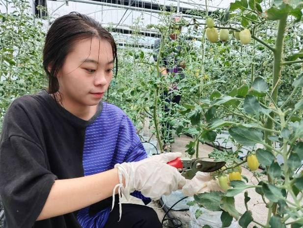
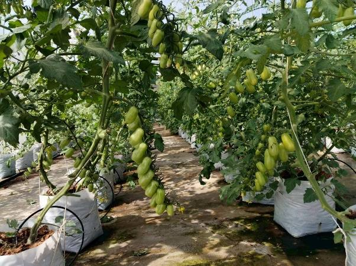
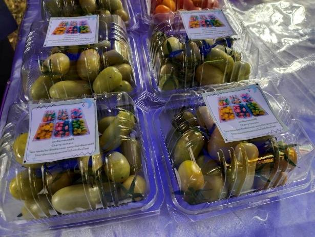
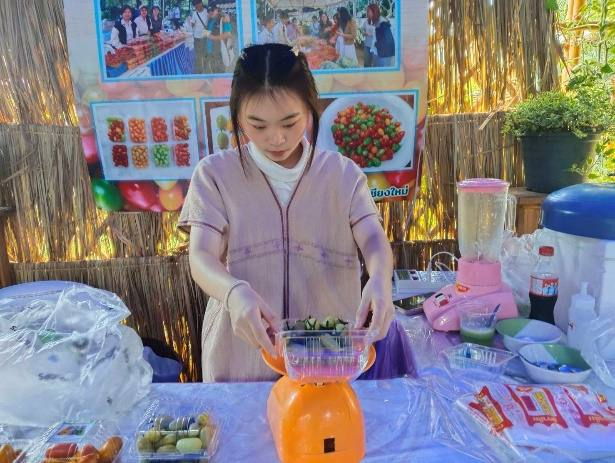

1
ความก้าวหน้าตั้งแต่ Pitching Day
ตั้งแต่ได้รับคัดเลือกเมื่อ 19 ส.ค. 2569 ทีมปรับแผนตามข้อเสนอแนะของกรรมการ ตั้งคณะกรรมการดำเนินงาน ได้ใบรับรอง GAP ทำ MOU กับผู้ซื้อ และเก็บผลผลิตในโรงเรือนเดิมไปแล้ว 2 รอบ งานที่เหลือรอการอนุมัติงบประมาณ
ผลงานที่วัดได้
ผลการทดลองขาย ต่อ 1 รอบการผลิต (ประมาณการ)
ทดลองขายผลผลิตจากโรงเรือนเดิมผ่านช่องทางขายปลีกและขายส่ง ราคาที่ขายได้ใกล้เคียงกับที่ใช้ในแผนการเงิน ตัวเลขเป็นค่าประมาณจากทีม
ข้อเสนอแนะจากกรรมการ และสิ่งที่ทีมปรับแล้ว
กรรมการวัน Pitching Day ให้ข้อเสนอแนะ 3 ข้อ
งานที่ทำแล้ว
คณะกรรมการดำเนินงาน
แบ่งความรับผิดชอบตามกระบวนการผลิต ทุกแผนกวิชาใช้ฟาร์มเป็นแหล่งเรียนรู้และบูรณาการเข้ากับรายวิชาของตนเอง
สิ่งที่ยังค้างอยู่
ภาพการดำเนินงาน



